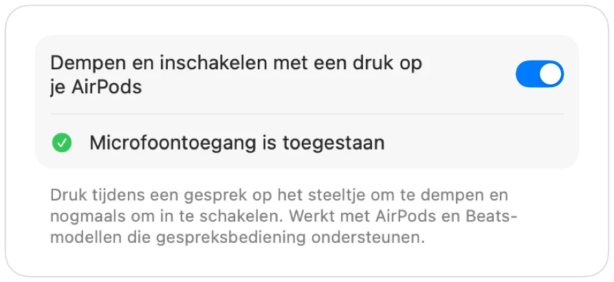

AirPods dempen werkt niet op je Mac? Dit is de oplossing
Met macOS kun je een gesprek dempen door op het steeltje van je AirPods te drukken, maar alleen als de app dit ondersteunt. Veel apps doen dat niet, waaronder Chrome en webgebaseerde vergaderingen daarin. Je drukt, hoort een fouttoontje, ziet een melding en het gesprek kan je nog steeds horen.
Muffle voegt deze ondersteuning toe aan elke app. De app ontvangt de druk, dempt de microfoon van je Mac en laat de normale demptoon horen.
Elke app dempen met een druk op je AirPods
- 1
Installeer Muffle en geef microfoontoegang. macOS stuurt de druk op het steeltje alleen door naar apps die de microfoon mogen gebruiken.
- 2
Controleer of „Dempen en inschakelen met een druk op je AirPods” aan staat in Muffle-instellingen.
- 3
Neem deel aan een gesprek. De druk dempt alleen wanneer een app daadwerkelijk de microfoon gebruikt.
- 4
Druk eenmaal op het steeltje om te dempen en nogmaals om weer in te schakelen.

- Buiten gesprekken start en pauzeert de druk op het steeltje nog steeds je muziek zoals gewoonlijk.
- Als je AirPods zijn ingesteld op een andere handeling voor gespreksbediening, controleer dan de instellingen van je AirPods in Systeeminstellingen.
Veelgestelde vragen
Waarom speelt mijn Mac een geluid af wanneer ik op mijn AirPods druk?
De app waarmee je belt ondersteunt de dempactie van AirPods niet, waardoor macOS deze weigert. Met Muffle actief dempt de druk op het steeltje alsnog betrouwbaar je microfoon.
Welke AirPods ondersteunen de dempdruk?
AirPods Pro, AirPods 3 en nieuwer, AirPods Max en Beats-modellen met ondersteuning voor gespreksbediening.